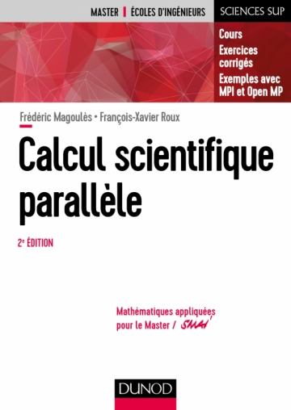
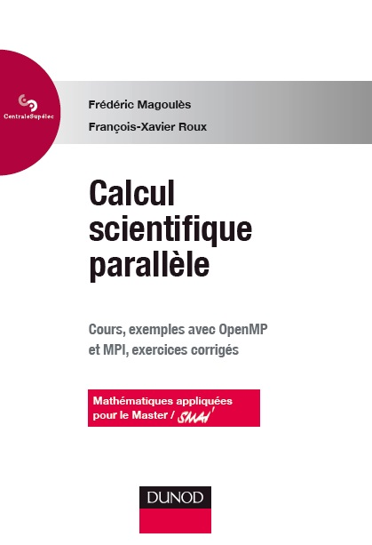
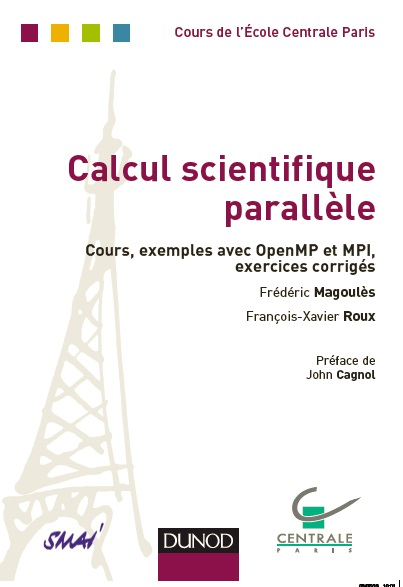

Teaching materials in scientific computing, computational methods, mathematics and programming. The collection includes printed course volumes and e-learning modules developed at French and UK institutions.
Scientific computing and parallel programming

Calcul scientifique parallèle: Cours, exemples avec OpenMP et MPI, exercices corrigés — Second edition
Date
Authors
Frédéric Magoulès and F.-X. Roux.
Publication
Dunod, Collection Cours de CentraleSupélec, Paris, France.
Format
Paperback · 252 pages.

Calcul scientifique parallèle: Cours, exemples avec OpenMP et MPI, exercices corrigés — Reissue
Date
Authors
Frédéric Magoulès and F.-X. Roux.
Publication
Dunod, Collection Cours de CentraleSupélec, Paris, France.
Format
Paperback · 288 pages.

Calcul scientifique parallèle: Cours, exemples avec OpenMP et MPI, exercices corrigés
Date
Authors
Frédéric Magoulès and F.-X. Roux.
Publication
Dunod, Collection Cours de l’École Centrale Paris, Paris, France.